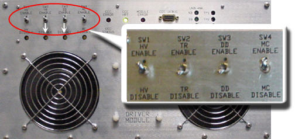
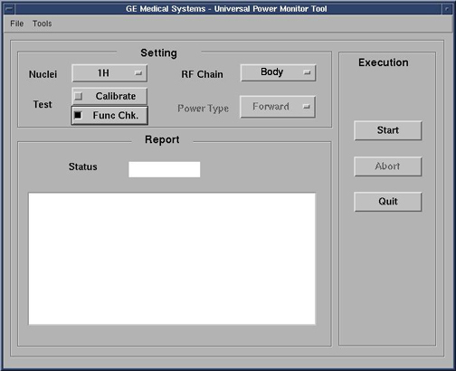

Operating Documentation
Direction 5440000, Rev# 5
Signa HDxt Service Methods
Module Version 13.0, Version Date 5/27/10
Operating Documentation |
| Required Persons | Preliminary Reqs | Procedure | Finalization |
|---|---|---|---|
| 1 | Not Applicable | 15 mins | 5 mins |
| NOTE: | Perform UPM body functional checks after UPM body calibration. Similarly, perform UPM head functional checks after UPM head calibration to save time. |
| Item | Qty | Effectivity | Part# | Manufacturer | |
|---|---|---|---|---|---|
| Power Measurement Kit (Wattmeter Kit) | 1 | - | 5307511 | - | |
| ||||
| fatal electric shock! | ||||
| hazardous voltages present throughout the rf cabinet when energized. | ||||
| disable RF amplifier when configuring the calibration tools. |
| Condition | Reference | Effectivity |
|---|---|---|
Properly calibrated RF output for Head and Body. | - | |
Properly calibrated UPM Head and Body mode. | - |
Inhibit TR and DD faults. Disable the Driver Module TR and DD fault detection. See Illustration 1. Ensure Switches SW2 and SW3 are in their respective Disable positions.
Illustration 1: Driver Module Switches

Place the RF ENABLE switch on front of exciter in the DISABLE (Down) position.
Place the RF ENABLE switch in the ENABLE (Up) position.
On the scanner operator control panel (OCP) press [Align on].
Move the cradle to place the Laser alignment light on the center of the table.
Press Landmark.
Press Advance to Scan.
Start the UPM tool:
In proprietary mode, [Click here to start tool] from the Calibration tab.
For the Class A service tool:
From the Common Service Desktop, select the Calibration Tab.
Select the [UPM Tool] from the calibration menu and select [Click here to start this tool].
Illustration 2 shows an example of the UPM tool.
Illustration 2: UPM tool

For Nuclei select [1H].
For RF Chain select [Body].
Select [Func Chk].
| NOTE: | Power Type is grayed out. This is normal and is not used. |
Select the [Start] button then click [YES] in answer to the setup question.
Illustration 3: Body Coil Setup Question
The user will be prompted during test execution. The following illustrations show an example of the pop up and error log that should be seen. Verify the error log and click [Yes] if an error message is seen.
Illustration 4: UPM Power Trip

Illustration 5: UPM Power Trip Error Log

To proceed if the test passes:
Switch RF ENABLE to the Disable (down) position.
Switch SW2 and SW3 to the Enable (up) position.
Switch RF ENABLE to the Enable (up) position
Proceed to Head UPM Functional Check. See Head UPM Functional Check
If functional checks fail, refer to Universal Power Monitor (UPM) Troubleshooting.
Inhibit TR and DD faults. Disable the Driver Module TR and DD fault detection in the Pen Cabinet, see Illustration 6. Ensure switches SW2 and SW3 are in the TR DISABLE and DD DISABLE positions.
Illustration 6: Driver Module Front Switches
Switch RF ENABLE on front of the exciter to the Disable (down) position.
Install the dummy load.
Place the head coil and connect it to the LPCA.
Landmark on the cradle where the head coil is.
On the operator control panel (OCP) press Advance to Scan.
Refer to Setting up Software Tool to Functional Check UPM – Body Channel Functional Check, Step 5 to start the Service browser.
For Nuclei select [1H].
For RF Chain select [Head].
Select the [Func Chk] button.
Select the [Start] button.
On the Head Coil Setup OK screen, click [Yes] when the head coil is ready to go.
Illustration 7: Head Coil Setup OK Screen

After that the tool takes full control and runs the functional test. The UPM status should indicate Pass or Fail.
The user will be prompted during test execution. Look in the error log to confirm that the test completed successfully, and a trip error occurred. Illustration 4 and Illustration 5 above show an example of the pop up and error log that should be seen.
To proceed:
If the test passes, select [Quit] from the UPM Main Window.
If the test fails, refer to Troubleshooting UPM.
Solution 1:
Check all cabling to the UPM-Boards to make sure that they are properly cabled. Be aware that while the UPM Processor Board will illuminate the Inhibit LED for cables that are an open circuit, it will function the same for cables that are terminated in a short circuit.
Repeat the UPM Functional Test (Head or Body).
Solution 2: Recheck RF Amp output
Cycle Power to the UPM Chassis.
Reset TPS.
Repeat the UPM Functional Test (Head or Body).
Solution 3: Reboot the system. Repeat the UPM Functional Test (Head or Body).
Solution 4:
Remove power from the UPM.
Re-seat the Processor Module.
Restore Power to the UPM.
Reset TPS.
Repeat the UPM Functional Test (Head or Body).
Solution 5:
Remove power from the UPM.
Reset the Detector Boards.
Restore Power to the UPM.
Reset TPS.
Repeat the UPM Functional Test (Head or Body).
Solution 6: The problem could be a bad Processor Module
Remove power from the UPM.
Replace the Processor Module.
Restore Power to the UPM.
Reset TPS.
Repeat the UPM Functional Test (Head or Body)
Solution 7: The problem could be a bad Detector Board
Remove power from the UPM.
Replace both Detector Boards.
Restore Power to the UPM.
Reset TPS.
Repeat the UPM Functional Test for the Receive chain that failed (Head or Body).
The Universal Power Monitor calibration parameters found in the UPM Calibration file (/export/home/signa/tools/upm/upm.config) are used in the calibration/Functional Check program. This calibration file is accessible from within the UPM Calibration tool from the File pull-down Menu, Edit Config option. These values can be edited and saved during troubleshooting to perhaps understand where the power monitor is tripping, (If at all). Before changing any parameter, make sure to select and run the Bkup UPM Cal option first. This will allow you to return to the default values at any time. The screen shot of the UPM Calibration file shown in Illustration 8 contains the default configuration values for all of the UPM parameters. This screen is just for reference, as the content and values will be different based on the system type and calibration results. (Use the [Restore Defaults] on the config file editor GUI (graphic user interface) to always get back to known default values). The final UPM digital attenuator values are written to the UPM Calibration Configuration files (Upm1Cal.cfg, Upm2Cal.cfg.etc.,) located in directory: w/config
See Illustration 8. Any changes to these values are temporary and can be quickly restored by selecting the restore defaults button.
Illustration 8: UPM Config Editor

Switch RF ENABLE on front of exciter to the Disable (down) position.
Remove the cables and measurement equipment.
Reattach the Head and Body heliax cables.
To re-enable fault detection, set switch SW2 and SW3 to their respective Enable positions.
Switch RF ENable on the front of the exciter to the Enable (up) position.
Complete a TPS reset and do a test scan.
Any failure after Troubleshooting is complete will require a re-calibration of the UPM system. See Universal Power Monitor - Head and Body Setup and Calibration.